About Crapette Pro
The classic French card game — Russian Bank — for iPhone and iPad
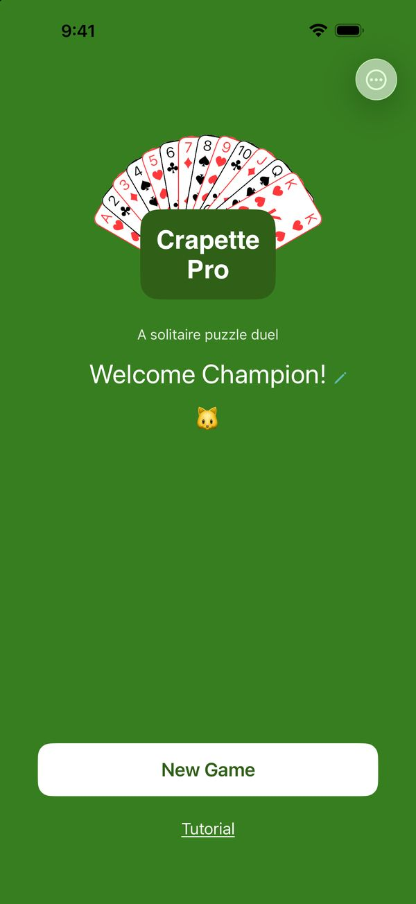
The Crapette you know. Forged in the heat of competition.
You know Crapette — Russian Bank: the first to get rid of all their cards wins. It is here, unchanged, at the Classic level.
To sharpen observation and thinking, the following levels gradually add more demanding rules. On every move, these rules make up a puzzle: solve it and you avoid a Stop!; solve them all and you aim for the best scores.
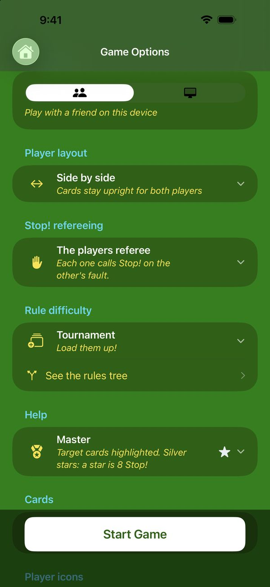
Build your ideal game.
Six opponents: someone facing you, on the same device, with your choice of refereeing; or the computer, from the Squire, who often makes mistakes, to the Algorithm, who never does.
Six rule levels, from the official game up to Ultimate✦.
Three levels of help: the less help you take, the more precious your stars — and the harder they are to earn.
That makes 6 × 6 × 3 = 108 ways to play.
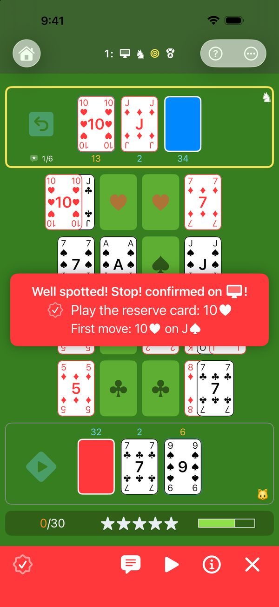
A computer that makes mistakes — on purpose.
The Squire, the Knight and the King make faults, often, sometimes or rarely: it's up to you to spot them and call Stop!, just as against a real player. And when you want a breather, the Algorithm never makes a mistake: just watch it play.
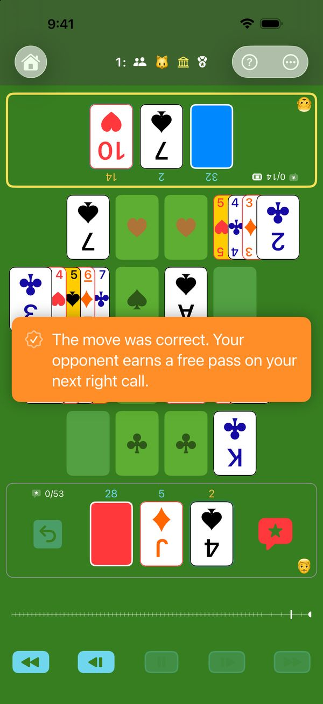
Face to face, no arguments.
Two players, a single device laid between you, the board turned towards each of you. Spot the other's fault and call Stop!: the computer checks it, no arguing — or referees on its own, if you prefer. But beware: a false call gives your opponent a joker.
Sharp-eyed grandchildren, seasoned grandparents: everyone on equal terms.
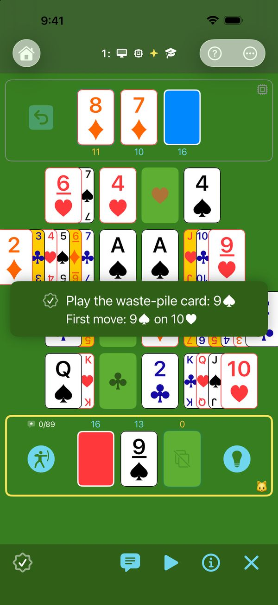
Every move is a puzzle.
At the Classic level, almost every move is allowed. At each level, one more rule cuts down the number of permitted moves, until only the best path remains. Every move becomes a puzzle: it's up to you to find its solution.
- Classic: traditional Crapette, with its two official rules — foundations in one move, reserve before stock.
- Club: bring to the foundations every card that can reach them.
- Tournament: load the opponent's reserve.
- Professional: free as many rows as possible.
- Ultimate: reach the top-priority target in the fewest moves.
- Ultimate✦: between two equally short paths, take the one that also respects the lower-priority rules.
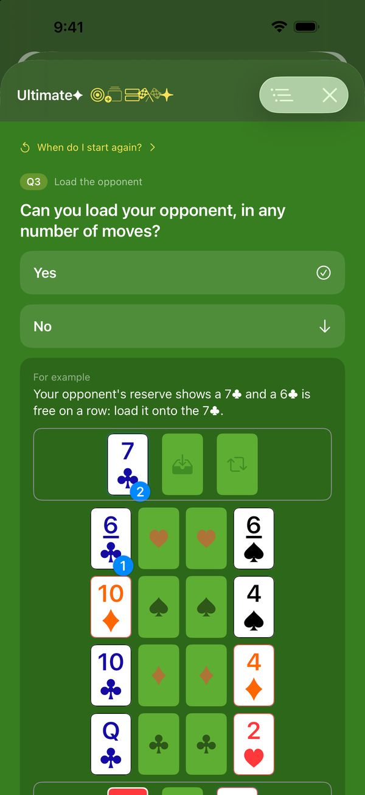
Every move explains itself.
Every Stop! you receive, every hint you ask for shows you the move to play — and the rule that requires it.
The rules tree shows how the rules fit together: one question at a time, in the order of your level, down to the right move.
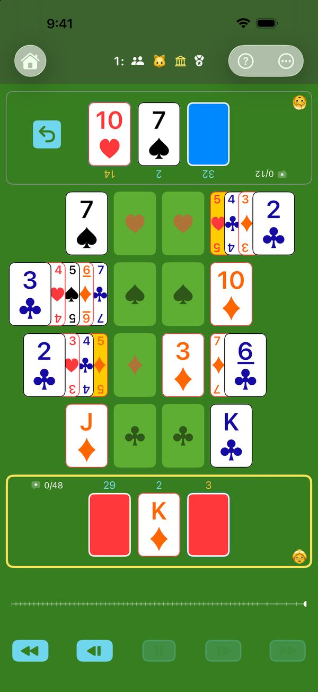
Exercises the brain, healthily, at any age.
Observe, think, optimise your move among those available: every game gives your mind a workout. With no timer, you take the time to think, and the difficulty adjusts to you. All while playing: you train without noticing.
The game a parent can offer a child: thinking, no flashing effects, no addiction. Games take real effort: after one or two, children run off to play outside.
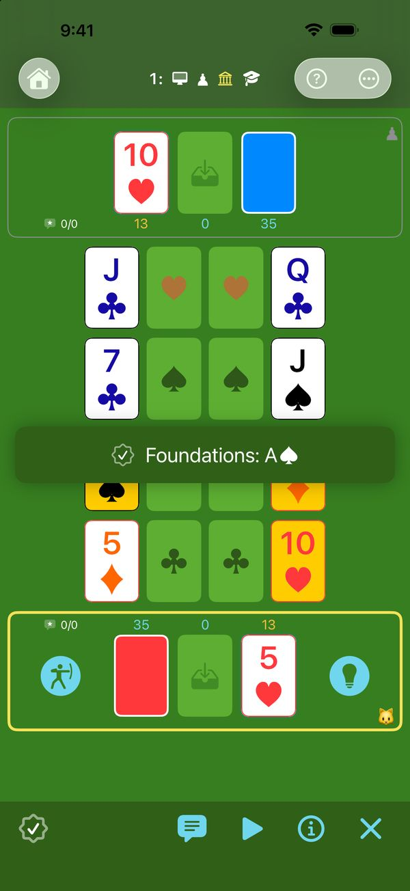
The training ground. Here, the goal is to learn.
Start at the Classic level, as a Student, with every aid. Target cards show the possible goals. The hint shows you the top-priority target and the first move to reach it. Best move plays for you. Unsure about a button? Tap “?”: every element of the board explains itself. Sharpen your tactical sense on the training ground.
Like a wooden practice sword, Oops! lets you take hits without too much pain: you replay your move, but the fault still counts.
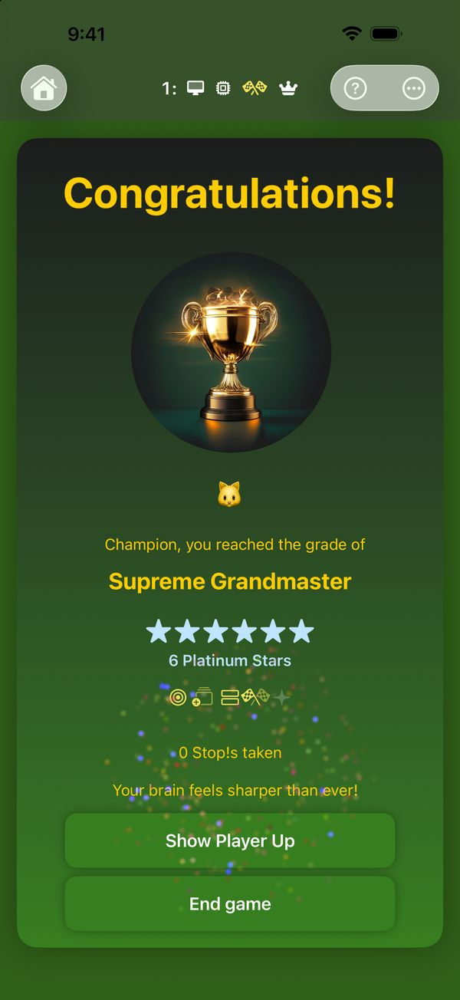
Your progress, in grades and stars.
The score is there to motivate you and measure your progress. Earn ever more prestigious grades and precious stars.
The ultimate reward: platinum, for a faultless game.
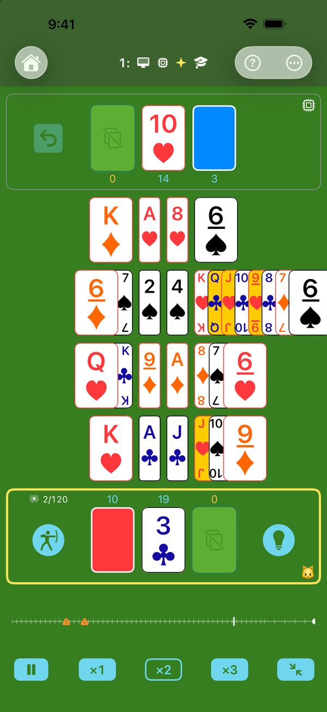
An arena under the spotlights, so you miss no detail.
A game designed to be legible: even grandma won't have an excuse.
Choose your cards: standard, high visibility, or high visibility on all four corners. Four suits with clearly distinct colours and shapes: everything stays legible, even on a small screen.
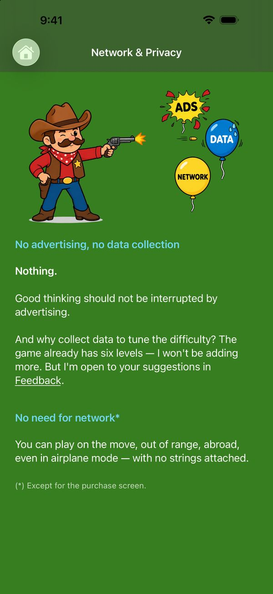
A game built like an athlete.
- Quick: in a very short time, the engine knows whether your move is the right one.
- Light: around 10 MB, downloaded in an instant.
- Self-sufficient: no network needed to play (except when you make a purchase, of course).
- Discreet: the game collects no data.
- No advertising: good thinking should not be interrupted.
- No addiction: no notifications, no streak to keep up, no obligation to play. You come back when you feel like it.
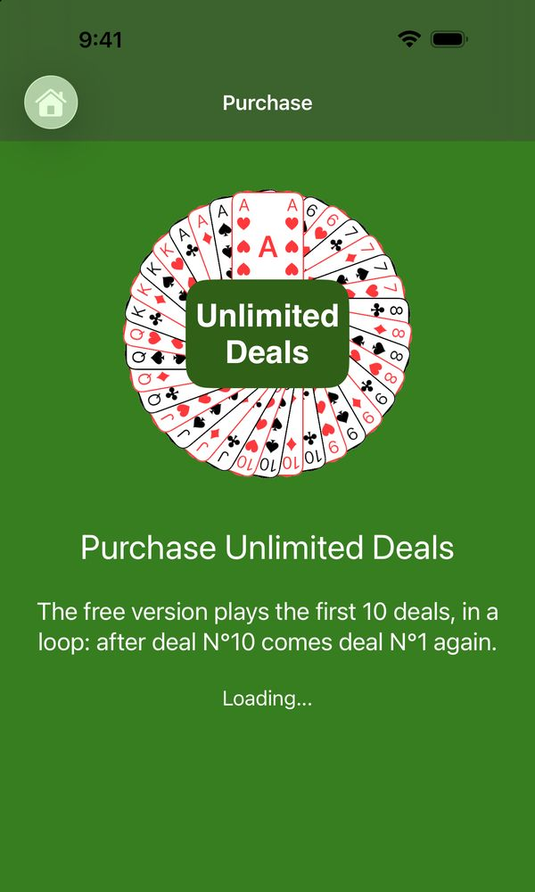
The unlimited sandbox.
No subscription. The whole game can be tried for free, with no time limit — every level, every opponent, every aid. Build as many sandcastles as you like, but on the first ten deals, which come round in a loop.
A single purchase opens new deals, endlessly.
A question, a bug, a suggestion? The support page has the answers to frequent questions, and my email address.